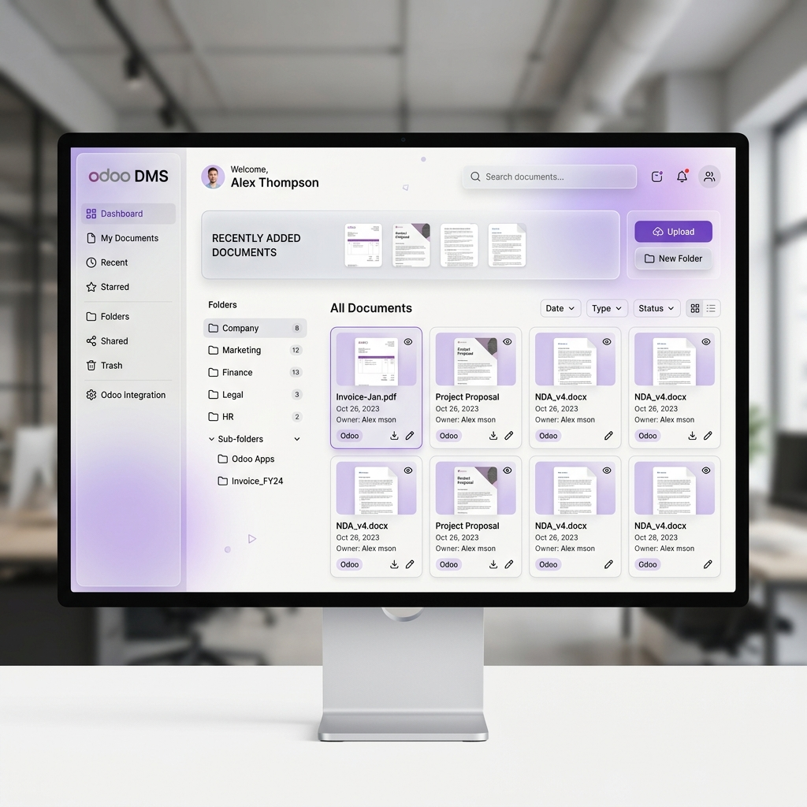
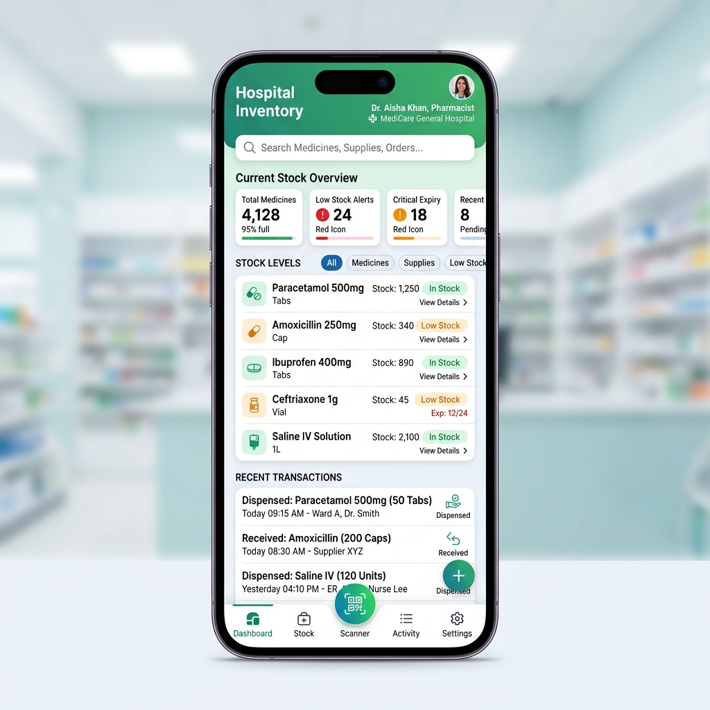
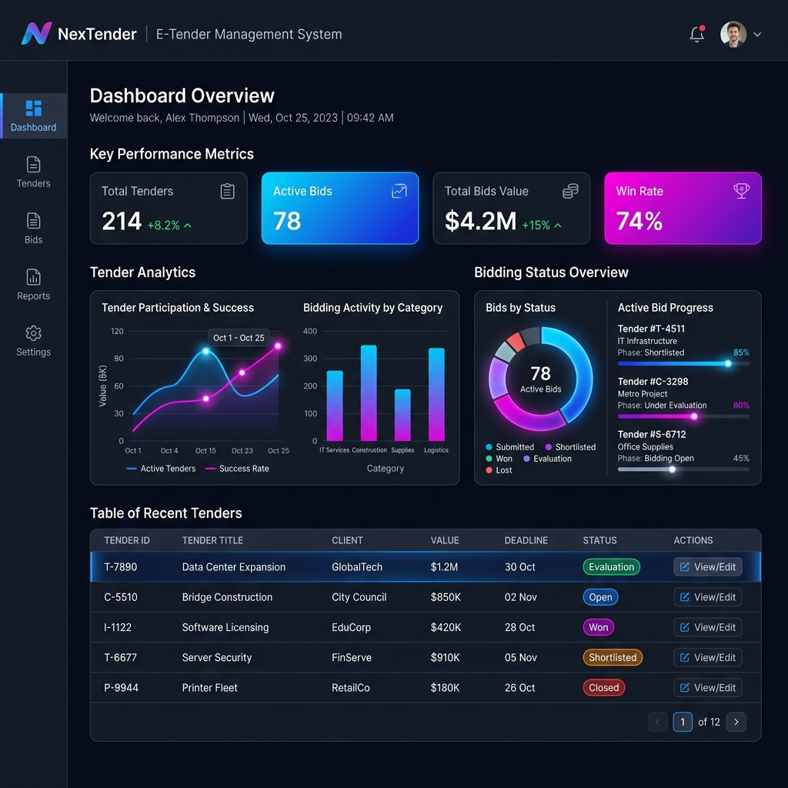

Karya Unggulan
Kumpulan proyek nyata yang saya bangun — dari aplikasi mobile hingga sistem enterprise berbasis Odoo.

FlowNotes App
Aplikasi mobile modern yang menggabungkan pencatat keuangan harian dan notes terorganisir. Dibangun dengan Flutter, dilengkapi animasi halus, dark mode, dan navigasi multi-halaman yang intuitif.

Aplikasi Klinik
Sistem manajemen klinik berbasis Flutter untuk mempercepat alur kerja medis — pencatatan data pasien, riwayat kunjungan, dan antarmuka bersih yang mudah digunakan staf medis.

SIMRS
Sistem informasi rumah sakit terintegrasi dengan Odoo sebagai backend enterprise. Mencakup modul rekam medis, persetujuan layanan, QR signature, jadwal rawat inap, dan CRM pasien dalam satu platform.

Odoo AJG
Transformasi digital menyeluruh untuk PT. AJG melalui kustomisasi Odoo ERP. Mencakup manajemen tender (E-Tender), pengarsipan dokumen otomatis (DMS), dan optimasi alur kerja approval yang terintegrasi.

Alhamra Apps
Solusi manajemen pendidikan terpadu untuk Alhamra. Memudahkan pemantauan data siswa, integrasi nilai akademik, dan komunikasi antara sekolah dan wali murid melalui antarmuka mobile yang intuitif.

GudangIN
Aplikasi manajemen inventaris gudang yang komprehensif. Dilengkapi fitur pelacakan stok real-time, manajemen lokasi penyimpanan (rack mapping), dan pelaporan mutasi barang yang akurat untuk efisiensi logistik.